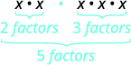

The original, as published: OpenStax, Precalculus 2e, Abramson et al., section 4.5 Logarithmic Properties. © Rice University. CC BY-NC-SA 4.0, https://creativecommons.org/licenses/by-nc-sa/4.0/. Imported as published, from https://openstax.org/books/precalculus-2e/pages/4-5-logarithmic-properties
Simplify expressions using the properties for exponents.
| Simplify | ||
| What does this mean? |  | |
| Now we see that |
To multiply powers with the same base we need to ________ exponents.
This leads us to the Product Property
Simplify
| What does this mean? | After simplifying we get | |
| Now we see that |
To divide powers with the same base we need to __________ exponents.
This leads us to the Quotient Property
Simplify
| What does this mean? | After adding exponents we get . | |
| Now we see that |
To raise a power to a power we need to __________ exponents.
This leads us to the Power Property .
We will also use these other properties:
| Negative Exponents Property | |
| Zero Exponent Property |
Simplify expressions using the properties for exponents.
ⓐ
| Use the product property. | |
| Simplify. |
ⓑ
| Use the product property and multiply exponents. | |
| Use the quotient property and add exponents. |
ⓒ
| Use the power property and multiply exponents. | |
| Use the product property and add exponents. | |
| Any base to the power of zero equals 1. |
Simplify expressions using the properties for exponents.
| Property | Base | Base |
|---|---|---|
| Inverse Properties | ||
| Product Property of Logarithms | ||
| Quotient Property of Logarithms | ||
| Power Property of Logarithms |
Use the Properties of Logarithms to expand the logarithm . Simplify, if possible.
| Use the Product Property, . | |
| Use the Power Property, , on the last two terms. | |
| Simplify. | |
Use the Properties of Logarithms to expand the logarithm . Simplify, if possible.
| Rewrite the radical with a rational exponent. | |
| Use the Power Property, . | |
| Use the Quotient Property, . | |
| Use the Product Property, , in the second term. | |
| Use the Power Property, , inside the parentheses. | |
| Simplify by distributing. | |
Use the Properties of Logarithms to condense the logarithm . Simplify, if possible.
| The log expressions all have the same base, 4. | |
| The first two terms are added, so we use the Product Property, . | |
| Since the logs are subtracted, we use the Quotient Property, . | |
Use the properties of logarithms to expand:
Use the properties of logarithms to expand:
Use the Properties of Logarithms to condense the logarithm:
Use the Properties of Logarithms to condense the logarithm:
In chemistry, pH is used as a measure of the acidity or alkalinity of a substance. The pH scale runs from 0 to 14. Substances with a pH less than 7 are considered acidic, and substances with a pH greater than 7 are said to be basic. Our bodies, for instance, must maintain a pH close to 7.35 in order for enzymes to work properly. To get a feel for what is acidic and what is basic, consider the following pH levels of some common substances:
To determine whether a solution is acidic or basic, we find its pH, which is a measure of the number of active positive hydrogen ions in the solution. The pH is defined by the following formula, where is the concentration of hydrogen ion in the solution
The equivalence of and is one of the logarithm properties we will examine in this section.
Recall that the logarithmic and exponential functions “undo” each other. This means that logarithms have similar properties to exponents. Some important properties of logarithms are given here. First, the following properties are easy to prove.
For example, since And since
Next, we have the inverse property.
For example, to evaluate we can rewrite the logarithm as and then apply the inverse property to get
To evaluate we can rewrite the logarithm as and then apply the inverse property to get
Finally, we have the one-to-one property.
We can use the one-to-one property to solve the equation for Since the bases are the same, we can apply the one-to-one property by setting the arguments equal and solving for
But what about the equation The one-to-one property does not help us in this instance. Before we can solve an equation like this, we need a method for combining terms on the left side of the equation.
Recall that we use the product rule of exponents to combine the product of powers by adding exponents: We have a similar property for logarithms, called the product rule for logarithms, which says that the logarithm of a product is equal to a sum of logarithms. Because logs are exponents, and we multiply like bases, we can add the exponents. We will use the inverse property to derive the product rule below.
Given any real number and positive real numbers and where we will show
Let and In exponential form, these equations are and It follows that
Note that repeated applications of the product rule for logarithms allow us to simplify the logarithm of the product of any number of factors. For example, consider Using the product rule for logarithms, we can rewrite this logarithm of a product as the sum of logarithms of its factors:
The product rule for logarithms can be used to simplify a logarithm of a product by rewriting it as a sum of individual logarithms.
Given the logarithm of a product, use the product rule of logarithms to write an equivalent sum of logarithms.
Expand
We begin by factoring the argument completely, expressing as a product of primes.
Next we write the equivalent equation by summing the logarithms of each factor.
Expand
For quotients, we have a similar rule for logarithms. Recall that we use the quotient rule of exponents to combine the quotient of exponents by subtracting: The quotient rule for logarithms says that the logarithm of a quotient is equal to a difference of logarithms. Just as with the product rule, we can use the inverse property to derive the quotient rule.
Given any real number and positive real numbers and where we will show
Let and In exponential form, these equations are and It follows that
For example, to expand we must first express the quotient in lowest terms. Factoring and canceling we get,
Next we apply the quotient rule by subtracting the logarithm of the denominator from the logarithm of the numerator. Then we apply the product rule.
The quotient rule for logarithms can be used to simplify a logarithm or a quotient by rewriting it as the difference of individual logarithms.
Given the logarithm of a quotient, use the quotient rule of logarithms to write an equivalent difference of logarithms.
Expand
First we note that the quotient is factored and in lowest terms, so we apply the quotient rule.
Notice that the resulting terms are logarithms of products. To expand completely, we apply the product rule, noting that the prime factors of the factor 15 are 3 and 5.
There are exceptions to consider in this and later examples. First, because denominators must never be zero, this expression is not defined for and Also, since the argument of a logarithm must be positive, we note as we observe the expanded logarithm, that and Combining these conditions is beyond the scope of this section, and we will not consider them here or in subsequent exercises.
Expand
We’ve explored the product rule and the quotient rule, but how can we take the logarithm of a power, such as One method is as follows:
Notice that we used the product rule for logarithms to find a solution for the example above. By doing so, we have derived the power rule for logarithms, which says that the log of a power is equal to the exponent times the log of the base. Keep in mind that, although the input to a logarithm may not be written as a power, we may be able to change it to a power. For example,
The power rule for logarithms can be used to simplify the logarithm of a power by rewriting it as the product of the exponent times the logarithm of the base.
Given the logarithm of a power, use the power rule of logarithms to write an equivalent product of a factor and a logarithm.
Expand
The argument is already written as a power, so we identify the exponent, 5, and the base, and rewrite the equivalent expression by multiplying the exponent times the logarithm of the base.
Expand
Expand using the power rule for logs.
Expressing the argument as a power, we get
Next we identify the exponent, 2, and the base, 5, and rewrite the equivalent expression by multiplying the exponent times the logarithm of the base.
Expand
Rewrite using the power rule for logs to a single logarithm with a leading coefficient of 1.
Because the logarithm of a power is the product of the exponent times the logarithm of the base, it follows that the product of a number and a logarithm can be written as a power. For the expression we identify the factor, 4, as the exponent and the argument, as the base, and rewrite the product as a logarithm of a power:
Rewrite using the power rule for logs to a single logarithm with a leading coefficient of 1.
Taken together, the product rule, quotient rule, and power rule are often called “laws of logs.” Sometimes we apply more than one rule in order to simplify an expression. For example:
We can use the power rule to expand logarithmic expressions involving negative and fractional exponents. Here is an alternate proof of the quotient rule for logarithms using the fact that a reciprocal is a negative power:
We can also apply the product rule to express a sum or difference of logarithms as the logarithm of a product.
With practice, we can look at a logarithmic expression and expand it mentally, writing the final answer. Remember, however, that we can only do this with products, quotients, powers, and roots—never with addition or subtraction inside the argument of the logarithm.
Rewrite as a sum or difference of logs.
First, because we have a quotient of two expressions, we can use the quotient rule:
Then seeing the product in the first term, we use the product rule:
Finally, we use the power rule on the first term:
Expand
Expand
Expand
Can we expand
No. There is no way to expand the logarithm of a sum or difference inside the argument of the logarithm.
Expand
We can expand by applying the Product and Quotient Rules.
Expand
We can use the rules of logarithms we just learned to condense sums, differences, and products with the same base as a single logarithm. It is important to remember that the logarithms must have the same base to be combined. We will learn later how to change the base of any logarithm before condensing.
Given a sum, difference, or product of logarithms with the same base, write an equivalent expression as a single logarithm.
Write as a single logarithm.
Using the product and quotient rules
This reduces our original expression to
Then, using the quotient rule
Condense
can also be written by reducing the fraction to lowest terms.
Condense
We apply the power rule first:
Next we apply the product rule to the sum:
Finally, we apply the quotient rule to the difference:
Rewrite as a single logarithm.
Rewrite as a single logarithm.
We apply the power rule first:
Next we rearrange and apply the product rule to the sum:
Finally, we apply the quotient rule to the difference:
Condense
this answer could also be written
Recall that, in chemistry, If the concentration of hydrogen ions in a liquid is doubled, what is the effect on pH?
Suppose is the original concentration of hydrogen ions, and is the original pH of the liquid. Then If the concentration is doubled, the new concentration is Then the pH of the new liquid is
Using the product rule of logs
Since the new pH is
When the concentration of hydrogen ions is doubled, the pH decreases by about 0.301.
How does the pH change when the concentration of positive hydrogen ions is decreased by half?
The pH increases by about 0.301.
Most calculators can evaluate only common and natural logs. In order to evaluate logarithms with a base other than 10 or we use the change-of-base formula to rewrite the logarithm as the quotient of logarithms of any other base; when using a calculator, we would change them to common or natural logs.
To derive the change-of-base formula, we use the one-to-one property and power rule for logarithms.
Given any positive real numbers and where and we show
Let By exponentiating both sides with base, we arrive at an exponential form, namely It follows that
For example, to evaluate using a calculator, we must first rewrite the expression as a quotient of common or natural logs. We will use the common log.
The change-of-base formula can be used to evaluate a logarithm with any base.
For any positive real numbers and where and
It follows that the change-of-base formula can be used to rewrite a logarithm with any base as the quotient of common or natural logs.
and
Given a logarithm with the form use the change-of-base formula to rewrite it as a quotient of logs with any positive base where
Change to a quotient of natural logarithms.
Because we will be expressing as a quotient of natural logarithms, the new base,
We rewrite the log as a quotient using the change-of-base formula. The numerator of the quotient will be the natural log with argument 3. The denominator of the quotient will be the natural log with argument 5.
Change to a quotient of natural logarithms.
Can we change common logarithms to natural logarithms?
Yes. Remember that means So,
Evaluate using the change-of-base formula with a calculator.
According to the change-of-base formula, we can rewrite the log base 2 as a logarithm of any other base. Since our calculators can evaluate the natural log, we might choose to use the natural logarithm, which is the log base
Evaluate using the change-of-base formula.
Access these online resources for additional instruction and practice with laws of logarithms.
| The Product Rule for Logarithms | |
| The Quotient Rule for Logarithms | |
| The Power Rule for Logarithms | |
| The Change-of-Base Formula |
How does the power rule for logarithms help when solving logarithms with the form
Any root expression can be rewritten as an expression with a rational exponent so that the power rule can be applied, making the logarithm easier to calculate. Thus,
What does the change-of-base formula do? Why is it useful when using a calculator?
For the following exercises, expand each logarithm as much as possible. Rewrite each expression as a sum, difference, or product of logs.
For the following exercises, condense to a single logarithm if possible.
For the following exercises, use the properties of logarithms to expand each logarithm as much as possible. Rewrite each expression as a sum, difference, or product of logs.
For the following exercises, condense each expression to a single logarithm using the properties of logarithms.
For the following exercises, rewrite each expression as an equivalent ratio of logs using the indicated base.
to base
to base
For the following exercises, suppose and Use the change-of-base formula along with properties of logarithms to rewrite each expression in terms of and Show the steps for solving.
For the following exercises, use properties of logarithms to evaluate without using a calculator.
For the following exercises, use the change-of-base formula to evaluate each expression as a quotient of natural logs. Use a calculator to approximate each to five decimal places.
Use the product rule for logarithms to find all values such that Show the steps for solving.
Use the quotient rule for logarithms to find all values such that Show the steps for solving.
By the quotient rule:
Rewriting as an exponential equation and solving for
Checking, we find that is defined, so
Can the power property of logarithms be derived from the power property of exponents using the equation If not, explain why. If so, show the derivation.
Prove that for any positive integers and
Let and be positive integers greater than Then, by the change-of-base formula,
Does Verify the claim algebraically.
change-of-base formula a formula for converting a logarithm with any base to a quotient of logarithms with any other base.
power rule for logarithms a rule of logarithms that states that the log of a power is equal to the product of the exponent and the log of its base
product rule for logarithms a rule of logarithms that states that the log of a product is equal to a sum of logarithms
quotient rule for logarithms a rule of logarithms that states that the log of a quotient is equal to a difference of logarithms